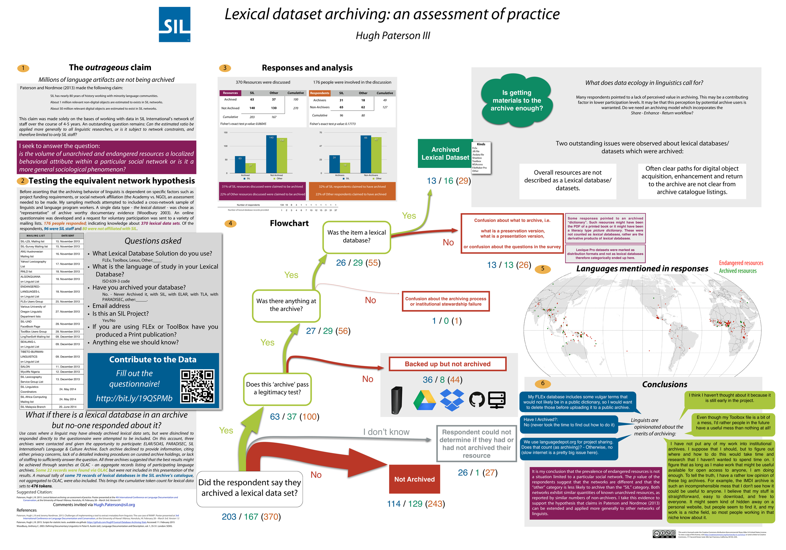

Endangered Resources - Red
Archived Resources - Green
Lexical Dataset Archiving: An Assessment of Practice
Abstract
Bird and Simons (2003), Johnson (2004), Nathan (2011), and Holton (2012) all emphasize the importance of archiving language artifacts. Woodbury (2003) suggests that lexical database resources should become part of the preserved documentary evidence - regardless of decisions to classify lexical datasets (which are often the foundational resources for dictionaries) as ‘language description’ or ‘language documentation’ materials. Language artifacts stewarded by archives are increasingly important in linguistic analysis, in peer review, and to minority language communities. This is in large part due to the impact of language documentation (Himmelmann 1998) on the linguistic sciences. However, as scientists and producers of language material artifacts, do archiving requirements come to us as linguists begrudgingly or do we embrace them? Paterson & Nordmoe (2013) suggests that among SIL staff there exist over 1 million unarchived minority language related artifacts including a substantial number of lexical databases. Lexical databases are complex resources potentially representing thousands of work-hours in data edits and curating and are valued by a wide variety of users including those who are interested in language revitalization and language descriptions.
Given the claim by Paterson and Nordmoe that such a large quantity of resources are in danger of being lost, contributing to the “erosion of the base” within linguistics; I think an important question should be asked: is the volume of unarchived and endangered resources a localized behavioral attribute within a particular social network or is it a linguistics wide phenomenon?
In this presentation results are presented which test the hypothesis that quantitative rates of archiving lexical dataset resources are homogeneous between SIL linguists (84 respondents) and non-SIL linguists (78 respondents). Further, an analysis of questionnaire results sent to linguists who self-identified as FLEx or Toolbox users is presented. The results suggest that there is homogeneity between the two groups of respondents with respect to archiving practices and that archiving rates are low compared to the number of lexical databases created. The low ratio of archived lexical databases to unarchived lexical databases has the potential to impact the current and future capacity of linguists, especially where lexical database resources concern endangered languages.

Referenceable as:
Hugh J. Paterson III (2015) Lexical dataset archiving: an assessment of practice. Poster presented at the 4th International Conference on Language Documentation and Conservation, at the Ala Moana Hotel in Honolulu, HI. February 26th – March 1st Version 1.0
Bibliography for Poster:
- Bird, Steven & Gary F. Simons. 2003. Seven dimension of portability for language documentation and description. Language 79(3). 557–582. doi: 10.1353/lan.2003.0149.
- Himmelmann, Nikolaus P. 1998. Documentary and Descriptive Linguistics. Linguistics 36(1). 161–195. doi: 10.1515/ling.1998.36.1.161.
- Holton, Gary. 2012. Language archives: They’re not just for linguists any more. In Frank Seifart et al. (eds.), Potentials of Language Documentation: Methods, Analyses, and Utilization (Language Documentation & Conservation Special Publication 3), 111-7. Honolulu, Hawai’i: University of Hawai’i Press. http://hdl.handle.net/10125/4523
- Johnson, Heidi. 2004. Language Documentation and Archiving, or How to build a better Corpus. In Peter Austin (ed.), Language Documentation and Description (2), 140-53. London, UK: SOAS. http://www.elpublishing.org/PID/026
- Nathan, David. 2011. Digital archiving. In Peter K. Austin & Julia Sallabank (eds.), The Cambridge handbook of endangered languages (Cambridge Handbooks in Language and Linguistics), 255-74. Cambridge: Cambridge University Press. doi: 10.1017/CBO9780511975981.013
- Woodbury, Anthony C. 2003. Defining Documentary Linguistics. In Peter K. Austin (ed.), Language Documentation and Description (1), 35-51. London: SOAS. http://www.elpublishing.org/PID/006
- Paterson III, Hugh & Jeremy Nordmoe. 2013. Challenges of implementing a tool to extract metadata from linguists: the use case of RAMP. Poster presented at 3rd International Conference on Language Documentation and Conservation (ICLDC), Honolulu, Hawai’i, (2 March 2013). http://hdl.handle.net/10125/26178
Hugh Paterson III
Collaborative Scholar
My research interests include typological patterns in articulatory phonetics; User Experience design in language tools; and graph theory applied to language and linguistic resource discovery.